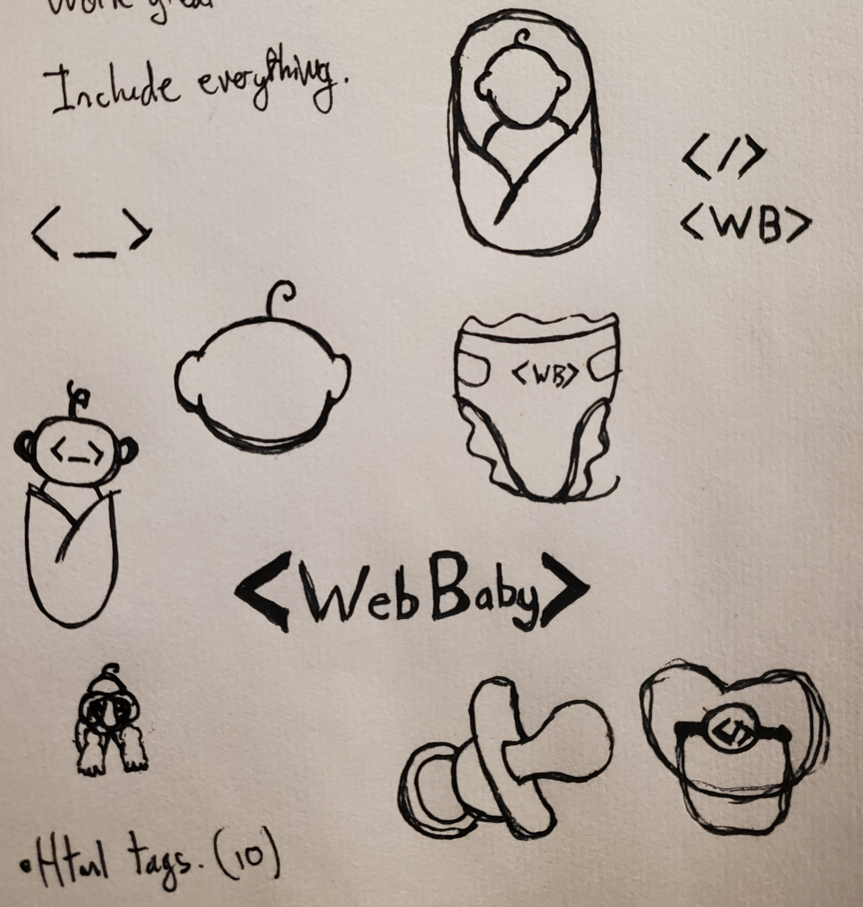
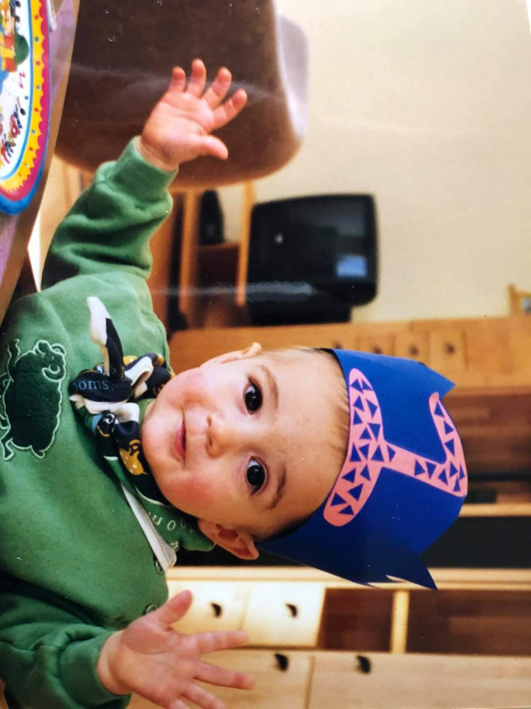

Hi. I'm Jarne. I, too, love WebBaby.

Here are the concepts I created for the WebBaby Logo.
Here are some fun facts about me.
- I play many video games, some of which I take way too competitively.
- My favorite games are Super Smash Bros. (both melee and Ultimate), League of Legends, Rocket League, The Binding of Isaac, and Chess!
- I am the best Super Smash Bros. Ultimate player in the world, in which I play as Chrom.
(opinion).
Here is a picture of me as a baby.
